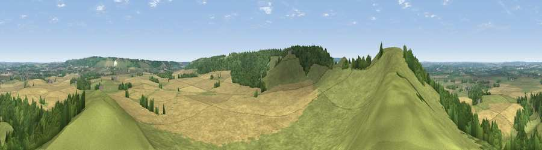

Viewpoint near Ivinghoe Aston
#11607 in England · top 11% of its area beats it · near Ivinghoe AstonWhere it is
The exact computed spot (SP 96575 16925). Click the marker for map links.
The view, rendered

A 360° render of this exact spot computed from the terrain model, tree cover and land cover — summer colours, afternoon light, calibrated against photographs of famous viewpoints. Real trees, hedges and buildings will differ in detail.
The panorama
Grey silhouette: terrain skyline in each direction (720 bearings, Earth curvature and refraction included). Dashed green: skyline with trees (+15 m) and buildings (+8 m) as obstacles. Blue strip: how far the ground is visible on each bearing.
Where the view opens
Wedge length = distance to the farthest visible ground on that bearing (vegetation-aware). Rings at 10, 25 and 50 km.
What fills the view
47% grassland · 39% cropland · 14% woodland ·
Angular shares of the visible panorama (visual magnitude), not map area. Landscape diversity 0.45 (0–1 Shannon).
Key numbers
More beautiful places nearby
The staircase of upgrades: each row has a higher view potential than everything closer. Driving times are estimates from straight-line distance, calibrated against real road routing — check an actual route before setting out.
| Place | Direction | Drive | Score |
|---|---|---|---|
| Beacon Hill | W · 1 km | ~2 min | 74.1 |
| Viewpoint near Halton | SW · 10 km | ~20 min | 74.3 |
| Coombe Hill Monument | SW · 15 km | ~27 min | 75.5 |
| Viewpoint near Woolstone | WSW · 73 km | ~97 min | 76.7 |
| Viewpoint near Meon Vale | WNW · 84 km | ~108 min | 77.0 |
| Broadway Hill | WNW · 87 km | ~111 min | 77.7 |
| Cleeve Hill | W · 98 km | ~123 min | 79.8 |
| Nottingham Hill | W · 99 km | ~123 min | 80.9 |
51.84259, -0.59956 · source: screening · position refined by local search. Computed location — check access rights before visiting.